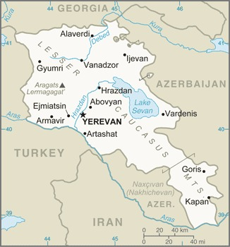

Genel Bilgiler
Ermenistan, Güney Kafkasya’da yer alan üniter bir cumhuriyettir. Başkenti Erivan’dır. Yaklaşık 3 milyon nüfusa sahiptir. Resmî dili Ermenice’dir ve para birimi Ermeni Dramı (AMD)’dır. Ermenistan, tarihi ve kültürel mirasıyla tanınır ve Hristiyanlığı kabul eden ilk devletlerden biridir.
Ermenistan, kuzeyde Gürcistan, doğuda Azerbaycan, güneyde İran ve batıda Türkiye ile çevrilidir. Yüzölçümü yaklaşık 29.743 km²’dir. Ülke coğrafyası dağlık ve platolardan oluşur; önemli nehirleri Aras ve Hrazdan’dır. Büyük göller arasında Sevan Gölü öne çıkar.
Başkent: Erivan
Kıta: Orta Doğu ve Kuzey Afrika
Yüzölçümü: 29.743 km²
Nüfus (2025): 3.0 milyon

Bayrak Anlamı: Ermenistan bayrağı yatay üç eşit şeritten oluşur: kırmızı, mavi ve turuncu. Kırmızı ulusun cesaretini ve tarihsel mücadeleleri, mavi barışı ve gökyüzünü, turuncu ise üretkenliği ve cesareti simgeler. Bayrak 1990 yılında kabul edilmiştir ve ülkenin ulusal sembolüdür.
Ermenistan Haritası
Ekonomi
Ermenistan ekonomisi tarım, sanayi ve hizmet sektörlerine dayanır. Tarımda buğday, meyve ve sebze üretimi öne çıkar. Sanayi sektöründe gıda işleme, alüminyum ve madencilik öne çıkar. Hizmet sektörü özellikle turizm ve finans alanlarında gelişmektedir. Ülke, doğal kaynakları ve tarihi mirası ile bölgesel ekonomi için önemlidir.
| Yıl | İhracat (Milyar $) | İthalat (Milyar $) |
|---|---|---|
| 2019 | 2 | 4 |
| 2020 | 1.8 | 3.5 |
| 2021 | 2.5 | 5 |
| 2022 | 3 | 5.5 |
| 2023 | 3.2 | 5.8 |